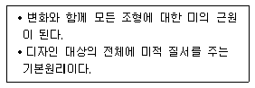
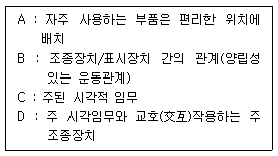
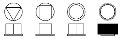
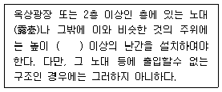
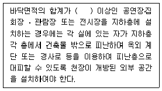
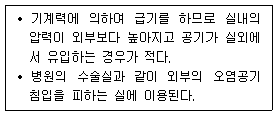

실내건축기사(구) (2015-03-08 기출문제)
1과목: 실내디자인론
1. 우리나라의 한옥에 관한 설명으로 옳지 않은 것은?
- 창과 문은 좌식생활에 따른 인체치수를 고려하여 만들어졌다.
- 기단을 높여 통풍이 잘 되도록 하여 땅의 습기를 제거하였다.
- 미닫이문, 들문 등의 사용으로 내부공간의 융통성을 도모하였다.
- 남부지방의 경우 겨울철 난방을 고려하여 기밀하고 폐쇄적인 내부공간구성으로 계획하였다.
(정답률: 82%)

2. 선에 관한 설명으로 옳지 않은 것은?
- 사선은 너무 많이 사용하면 불안정한 느낌을 줄 수 있다.
- 수직선은 무한, 확대, 영원, 안정, 고요 등 주로 정적인 느낌을 준다.
- 여러 개의 선을 이용하여 움직임, 속도감, 방향을 시각적으로 표현할 수 있다.
- 반복되는 선의 굵기와 간격, 방향을 변화시키면 2차원에서 부피와 깊이를 느끼게 표현할 수 있다.
(정답률: 77%)
3. 의자 및 소파에 관한 설명으로 옳지 않은 것은?
- 스툴은 등받이와 팔걸이가 없는 형태의 보조의자이다.
- 카우치는 이동하기 쉽도록 잡기 편하게 구성된 간이 의자이다.
- 세티는 동일한 2개의 의자를 나란히 합해 2인이 앉을수 있도록 한 의자이다.
- 라운지 체어는 비교적 큰 크기의 의자로 편하게 휴식을 취할 수 있는 안락의자이다.
(정답률: 82%)
4. 역리도형 착시의 예로 가장 알맞은 것은?
- 분트 도형
- 루빈의 항아리
- 펜로즈의 삼각형
- 포겐도르프 도형
(정답률: 59%)
5. 방풍 및 열손실을 최소로 줄여주면서 통행의 흐름을 완만하게 해주는 문의 형태는?
- 자동문
- 회전문
- 접이문
- 여닫이문
(정답률: 85%)
6. 실내디자인 프로세스의 기본계획 단계에 포함되지 않는 것은?
- 내부적 요구 분석
- 계획의 평가기준 설정
- 기본계획 대안들의 도면화
- 건축적 요소와 설비적 요소의 분석
(정답률: 73%)
7. 다음 설명에 알맞은 디자인 원리는?

- 강조
- 통일
- 리듬
- 대비
(정답률: 79%)
8. 질감에 관한 설명으로 옳지 않은 것은?
- 시각적 질감과 촉각적 질감으로 분류할 수 있다.
- 질감은 재료 자체가 주는 느낌으로서 조명의 효과에 영향을 받지 않는다.
- 질감은 시각적 환경에서 여러 종류의 물체들을 구분하는데 큰 도움을 줄 수 있는 중요한 특성 중 하나이다.
- 좁은 실내 공간을 넓게 느껴지도록 하기 위해서는 밝은 색을 선택하고, 표면이 곱고 매끄러운 재료를 사용한다.
(정답률: 88%)
9. 공간의 차단적 구획에 사용되는 것으로, 필요에 따라 공간을 구획할 수 있어 공간의 사용에 융통성을 줄 수있는 것은?
- 커튼
- 열주
- 조명
- 알코브
(정답률: 77%)
10. 빛의 각도를 이용하는 방법으로 벽면 마감재료의 재질감을 강조하는 조명의 연출 기법은?
- 스파클 기법
- 실루엣 기법
- 글레이징 기법
- 빔 플레이 기법
(정답률: 76%)
11. 19세기말부터 20세기초에 걸쳐 벨기에와 프랑스를 중심으로 모리스와 미술·공예운동의 영향을 받아서 과거의 양식과 결별하고 식물이 갖는 단순한 곡선 형태를 인테리어 가구 구성에 이용한 예술운동은?
- 아르데코
- 아르누보
- 아방가르드
- 컨템포러리
(정답률: 74%)
12. 다음 중 상점의 매장 내 진열장을 배치계획할 때 가장 중심적으로 고려해야 할 사항은?
- 고객동선
- 영업시간
- 조명의 조도
- 진열 케이스의 수
(정답률: 88%)
13. 책상을 같은 방향으로 배치하는 형태로 비교적 프라이버시의 침해가 적은 사무실 책상 배치의 유형은?
- 동향형
- 대향형
- 십자형
- 자유형
(정답률: 77%)
14. 다음 중 공간의 레이아웃에 관한 설명으로 가장 알맞은 것은?
- 조형적 아름다움을 부각하는 작업이다.
- 생활행위를 분석해서 분류하는 작업이다.
- 공간에서의 이동패턴을 계획하는 동선계획이다.
- 공간을 형성하는 부분과 설치되는 물체의 평면상 배치 계획이다
(정답률: 69%)
15. 부분 커튼으로 창문의 반 정도만 가리도록 만든 형태의 커튼은?
- 새시 커튼
- 드로우 커튼
- 글라스 커튼
- 드레퍼리 커튼
(정답률: 77%)
16. 기업체가 자사제품의 홍보, 판매 촉진 등을 위해 제품 및 기업에 관한 자료를 소비자들에게 직접 호소하여 제품의 우위성을 인식시키고자 하는 전시공간은?
- 캐럴
- 쇼룸
- 애리나
- 랜드스케이프
(정답률: 87%)
17. 균형의 원리에 관한 설명으로 옳지 않은 것은?
- 크기가 큰 것이 작은 것보다 시각적 중량감이 크다.
- 불규칙적인 형태가 기하학적 형태보다 시각적 중량감이 크다.
- 복잡하고 거친 질감이 단순하고 부드러운 것보다 시각적 중량감이 크다.
- 색의 명도가 같을 경우, 고채도의 색이 저채도의 색보다 시각적 중량감이 크다.
(정답률: 72%)
18. 실내공간 구성요소 중 벽(Wall)에 관한 설명으로 옳지 않은 것은?
- 시각적 대상물이 되거나 공간에 초점적 요소가 되기도 한다.
- 가구, 조명 등 실내에 놓여지는 설치물에 대해 배경적요소가 되기도 한다.
- 벽은 공간을 에워싸는 수직적 요소로 수평방향을 차단하여 공간을 형성한다.
- 다른 요소들이 시대와 양식에 의한 변화가 현저한데 비해 벽은 매우 고정적이다.
(정답률: 78%)
19. 연면적 200m2을 초과하는 판매시설에 설치하는 계단의 너비는 최소 얼마 이상으로 하여야 하는가?
- 90cm
- 120cm
- 150cm
- 180cm
(정답률: 68%)
20. 주택의 침실계획에 관한 설명으로 옳지 않은 것은?
- 침대의 측면은 외벽에 붙이는 것이 이상적이다.
- 침대 배치는 실의 크기와 침대와의 균형, 통로 부분의 확보 등을 고려한다.
- 침대 하부(머리부분의 반대편)는 통행에 불편하지 않도록 여유공간을 두는 것이 좋다.
- 침대의 머리 부분(head)에 조명기구를 둘 경우 빛이 눈에 직접 들어오지 않도록 한다.
(정답률: 85%)
2과목: 색채학
21. 오스트발트 등가색환에 있어서의 조화를 기호로 나타낸 것 중 보색조화에 해당하는 것은?
- 2ic – 4ic
- 8ni - 14ni
- 4Pg – 12Pg
- 2Pa - 14Pa
(정답률: 68%)
22. 혼합되는 각각의 색 에너지(energy)가 합쳐져서 더 밝은 색을 나타내는 혼합은?
- 감산혼합
- 중간혼합
- 가산혼합
- 색료혼합
(정답률: 81%)
23. 똑같은 에너지를 가진 각 파장의 단색광에 의하여 생기는 밝기의 감각은?
- 시감도
- 명순응
- 색순응
- 항상성
(정답률: 72%)
24. 전자장비들 간에 RGB 정보가 서로 호환성이 없는 이유가 아닌 것은?
- 입력 장비마다 각각 다른 감광도(感光度)를 가지고 있으므로
- 입력 장비마다 각각 다른 인간의 시감체계를 가지고 있으므로
- 디스플레이 장비의 전자총(電子銃) 성능이 다르므로
- 모니터마다 화면의 표면을 코팅하는 컬러 발광 물질이 다르므로
(정답률: 59%)
25. 다음 먼셀 색상기호 중 채도가 가장 높은 색은?
- 5BG
- 5R
- 5B
- 5P
(정답률: 84%)
26. 비눗방울이나 기름막, CD 표면에서 나타나는 무지개색이나 곤충의 날개에서 보이는 것과 관련한 빛의 성질은?
- 산란
- 회절
- 굴절
- 간섭
(정답률: 65%)
27. 오스트발트 색체계의 설명으로 틀린 것은?
- 먼셀 색체계에 비해 직관적이다.
- 색입체가 대칭구조를 이루고 있다.
- 기본색은 yellow, red, ultramarine, sea green이다.
- la - na - pa는 등흑색계열을 나타낸다.
(정답률: 35%)
28. 문·스펜서 조화론의 단점으로 옳은 것은?
- 무채색과의 관계를 생략하고 있다.
- 전통적 조화론을 무시하고 있다.
- 명도, 채도를 고려하지 않았다.
- 색의 연상, 기호, 상징성은 고려하지 않았다.
(정답률: 67%)
29. 다음 중 색채조절의 목적에 해당하는 것은?
- 수익증대를 주목적으로 한다.
- 작업의 활동적인 의욕을 높인다.
- 주변 환경과의 조화를 무엇보다 우선시 한다.
- 심미적인 조화를 우선적으로 고려한다.
(정답률: 59%)
30. 먼셀의 색입체를 수평으로 잘랐을 때 나타나는 것은?
- 등색상면
- 등명도면
- 등채도면
- 등대비면
(정답률: 54%)
31. 색채 대비실험에서 빨강 색지를 보다가 흰 색지를 볼 때 희미하게 보이는 색은?
- 노란색
- 자주색
- 청록색
- 보라색
(정답률: 75%)
32. KS의 일반 색명이 근거를 두고 있는 국제표준은?
- ASA
- CIE
- ISCC-NIST
- NCS
(정답률: 37%)
33. 디지털 기기의 색 공간 변환 목적이 아닌 것은?
- 디지털 컬러를 처리하는 장비들 사이의 컬러영역을 분리시키기 위함
- 영상처리 과정에서 영상의 분할, 특징추출, 복원, 향상 등을 정확하게 수행하기 위함
- 영상물 제작 과정에서 영상의 합성, 수정, 보완 등을 정확하고 용이하게 수행하기 위함
- 컴퓨터 그래픽스에서 렌더링, 특수효과 처리, 실사 영상과 CG영상의 합성, 수정, 보완 등을 정확하고 용이하게 수행하기 위함
(정답률: 65%)
34. 다음의 먼셀 기호 중 신록이나 목장, 신선한 기운을 상징하기에 가장 적절한 색은?
- 10R 6/2
- 10G 2/3
- 5GY 7/6
- 10B 4/3
(정답률: 67%)
35. 보색에 관한 설명으로 옳은 것은?
- 두 색을 혼합했을 때 무채색이 되는 색을 보색이라한다.
- 색상환에서 서로 인접한 색이다.
- 먼셀 색상환에서 빨강의 보색은 파랑이다.
- 가법혼색에서 녹색의 보색은 노랑이다.
(정답률: 75%)
36. 색의 혼합에 관한 설명으로 틀린 것은?
- 색료 혼합의 3원색은 magenta, yellow, cyan 이다.
- 색광 혼합의 2차색은 색료 혼합의 3원색이 된다.
- 색료 혼합은 혼합하면 할수록 채도가 낮아진다.
- 색광 혼합은 혼합하면 할수록 명도와 채도가 높아진다.
(정답률: 53%)
37. 명소시에서 암소시로 이행할 때 붉은색은 어둡게 되고, 청색은 상대적으로 밝아지는 것과 관련된 것은?
- 메타메리즘
- 색각이상
- 푸르킨예 현상
- 착시현상
(정답률: 47%)
38. 흰색 배경의 회색보다 검정색 배경의 회색이 더 밝게 보이는 것은?
- 보색대비
- 채도대비
- 명도대비
- 색상대비
(정답률: 76%)
39. 색의 지각현상에 관한 설명 중 틀린 것은?
- 난색이 한색보다 팽창되어 보인다.
- 검정색 배경 위의 고명도 색이 저명도 색보다 명시도가 높다.
- 한색이 난색보다 주목성이 높다.
- 고명도 색이 저명도 색보다 팽창되어 보인다.
(정답률: 75%)
40. 서로 조화되지 않는 두 색을 조화되게 하기 위한 일반적인 방법으로 가장 타당한 것은?
- 두 색의 사이에 백색 또는 검정색을 배치하였다.
- 두 색 중 한 색과 반대되는 색을 두 색의 사이에 배치하였다.
- 두 색 중 한 색과 유사한 색을 두 색의 사이에 배치하였다.
- 두 색의 혼합색을 만들어 두 색의 사이에 배치하였다.
(정답률: 46%)
3과목: 인간공학
41. 다음 중 1cd의 점광원으로부터 1m 떨어진 구면에 비추는 광의 밀도를 무엇이라 하는가?
- 와트(watt)
- 루멘(Lumen)
- 럭스(lux)
- 램버트(Lambert)
(정답률: 54%)
42. 다음 중 장기적으로 소음에 노출될 때의 청력 손실에 대한 설명으로 틀린 것은?
- 장기적으로 소음에 노출됨에 따른 청력손실은 회복 가능하다.
- 청력손실의 정도는 노출 소음수준에 따라 증가한다.
- 청력손실은 4000Hz 정도에서 크게 나타난다.
- 강한 소음은 노출시간에 따라 청력손실이 증가한다.
(정답률: 74%)
43. 다음 중 신체 부위의 동작과 설명이 올바르게 연결된 것은?
- 굴곡(flexion)이란 관절이 만드는 각도가 증가하는 동작을 말한다.
- 신전(extension)이란 관절이 만드는 각도가 감소하는 동작을 말한다.
- 외전(abduction)이란 신체 중심선을 향한 동작을 말한다.
- 회전(rotation)이란 분절의 운동궤적이 원뿔을 형성하는 동작을 말한다.
(정답률: 65%)
44. 다음 중 감각기관을 통하여 환경의 자극에 대한 정보를 감지하여 받아들이는 과정을 무엇이라 하는가?
- 지각
- 순응
- 청각
- 반응
(정답률: 77%)
45. 입식작업대의 높이는 작업의 종류 및 내용에 따라 달라진다. 다음 중 일반적으로 입식작업대 높이의 기준이 되는 것은?
- 어깨높이
- 가슴높이
- 허리높이
- 팔꿈치높이
(정답률: 71%)
46. 기술의 발전은 비교적 낮은 비용과 높은 신뢰도로 인간음성(speech)의 합성을 가능하게 했다. 다음 중 음성합성 체계의 유형이 아닌 것은?
- 암호화 합성(coding-synthesis)
- 분석-합성(analysis-synthesis)
- 규칙에 의한 합성(synthesis by rule)
- 정수화 녹음(digital recording)
(정답률: 48%)
47. 다음 중 인간의 눈의 구조에서 눈으로 들어오는 빛의 양을 조절하는 것은?
- 망막
- 동공
- 각막
- 수정체
(정답률: 70%)
48. 다음은 시각적 표시장치와 조종장치(control)를 포함하는 패널 설계시 고려되어야 할 내용으로 우선순위가 높은 것부터 낮은 순서대로 바르게 나열한 것은?

- C - A - B - D
- C - D - B - A
- A - C - D - B
- B - A - D - C
(정답률: 73%)
49. 다음 중 신체반응을 측정하는 데 있어서 그 척도와 방법이 잘못 연결된 것은?
- 골격활동의 척도 - 부정맥
- 정신활동의 척도 - 뇌파 기록
- 국소적 근육활동의 척도 - 근전도
- 생리적 부담의 척도 - 맥박수
(정답률: 80%)
50. 다음 중 인간-기계 시스템의 인간공학적 평가방법이 아닌 것은?
- 시뮬레이션 평가법
- 자동제어 평가법
- 관능검사 평가법
- 체크리스트 평가법
(정답률: 45%)
51. 다음 중 배광(配光)의 분류에 따른 조명방법에서 반간접 조명형에 해당하는 것은?
(정답률: 69%)
52. [그림]과 같은 손잡이(Knob)를 촉각정보(觸覺情報)를 통하여 분별, 확인할 수 있는 코딩(coding)방법은?

- 위치에 의한 코딩
- 크기에 의한 코딩
- 모양에 의한 코딩
- 색에 의한 코딩
(정답률: 81%)
53. 다음 중 소음 방지 방법에 관한 설명으로 적절하지 않은 것은?
- 딱딱한 충격면을 줄이고, 충격력을 제한할 것
- 반사면(벽, 천정 등)을 연질목재, 화이버보드(fiber board) 등으로 할 것
- 소음원을 칸막이 등으로 분리시킬 것
- 반사면은 반가가 잘 되는 재료를 사용하여 반대 방향으로 흡수되도록 할 것
(정답률: 58%)
54. 다음 중 근육의 대사 작용에서 근육 피로의 원인이 되는 물질로 옳은 것은?
- 단백질
- 포도당
- 젖산
- 글리코겐
(정답률: 80%)
55. 시각적 표시장치의 유형 중 원하는 값으로부터의 대략적인 편차 또는 고도 등 그 시간적인 변화 방향을 알아보는데 가장 적합한 형태는?
- 계수형(digital)
- 동목형(moving scale)
- 그림표시형(pictogram)
- 동침형(moving pointer)
(정답률: 65%)
56. 다음 중 실효온도(Effective Temperature)와 가장 관계가 적은 것은?
- 공기의 유동
- 상대습도
- 피부의 발한율
- 주위의 온도
(정답률: 58%)
57. 다음 중 의자의 인간공학적 설계를 위한 고려사항으로 가장 관계가 먼 것은?
- 좌면의 깊이와 폭
- 좌면의 무게부하 분포
- 앉은키의 높이와 의자의 강도
- 동체(胴體)의 안정성과 위치 변동의 편리성
(정답률: 59%)
58. 암실내의 고정된 빛을 응시하고 있으면 움직이는 것 처럼 보이는 현상을 무엇이라 하는가?
- 가현운동
- 자동운동
- 암순응
- 자극운동
(정답률: 30%)
59. 다음 중 신호검출이론(SDT)에 대한 설명으로 옳은 것은?
- 쉽게 식별할 수 없는 두 독립상태 상황에 적용된다.
- 신호가 약하거나 노이즈가 많을수록 감도는 커진다.
- 신호와 노이즈는 모두 F-분포를 따른다고 가정한다.
- 신호검출을 간섭하는 노이즈(noise)가 항상 있는 것은 아니다.
(정답률: 40%)
60. 다음 중 인간공학 연구에 사용되는 인간 기준(human criteria)의 척도와 가장 거리가 먼 것은?
- 생리학적 지표
- 인간성능 척도
- 주관적 반응
- 기계체계의 성능 기준
(정답률: 60%)
4과목: 건축재료
61. 스팬드럴 유리에 대한 설명으로 틀린 것은?
- 건축물의 외벽 층간이나 내ㆍ외부 장식용 유리로 사용한다.
- 판유리 한쪽 면에 세라믹질의 도료를 도장한 후 고온에서 융착, 반강화한 것으로 내구성이 뛰어나다.
- 색상이 다양하고 중후한 질감을 갖고 있으며 건축물의 모양에 따라 선택의 폭이 넓다.
- 열깨짐의 위험이 있으므로 유리표면에 페인트도장을 하거나 종이, 테이프 등을 부착하지 않는다.
(정답률: 69%)
62. 콘크리트용 골재의 입자 크기에 의한 분류에서 잔골재와 굵은 골재를 구분하는 체눈금의 크기는 얼마인가?
- 9mm체
- 7mm체
- 5mm체
- 3mm체
(정답률: 61%)
63. 동과 그 합금에 대한 설명으로 옳은 것은?
- 황동은 구리와 아연을 주성분으로 한다.
- 청동은 구리와 니켈을 주성분으로 한다.
- 구리는 녹청색으로 부식이 발생되므로 내식성이 우수하지 않다.
- 암모니아나 해수에 강하다.
(정답률: 54%)
64. 각종 금속제품에 대한 설명으로 틀린 것은?
- 메탈라스는 금속제 창호로서 내화성, 수밀성, 기밀성이 있다.
- 와이어라스는 아연도금한 연강선을 마름모꼴, 갑형, 둥근형 등으로 한 미장 바탕용 철망이다.
- 펀칭메탈은 금속판에 무늬 구멍을 낸 것으로 환기구, 각종 커버 등에 쓰인다.
- 논슬립은 계단 모서리 끝 부분의 보강 및 미끄럼막이를 목적으로 사용한다.
(정답률: 52%)
65. 건축재료의 요구성능 중 마감재료에서 필요성이 가장 적은 항목은?
- 화학적 성능
- 역학적 성능
- 내구성능
- 방화⋅내화 성능
(정답률: 69%)
66. 도장결함 중 주름발생 현상의 방지대책으로 가장 적합한 것은?
- 도료의 점도를 낮춘다.
- 교반을 충분하게 하고 겹칠을 한다.
- 바탕과 도료와의 심한 온도차를 피한다.
- 도포 후 즉시 직사광선을 쬐이지 않는다.
(정답률: 49%)
67. 목재 또는 기타 식물질을 작은 조각으로 하여 충분히 건조시킨 후 합성수지 접착제와 같은 유기질 접착제를 첨가하여 열압 제조한 목재 제품은?
- 집성목재
- 파티클보드
- 코펜하겐리브
- 코르크보드
(정답률: 64%)
68. 점토의 성질에 대한 설명으로 틀린 것은?
- 양질의 점토는 건조상태에서 현저한 가소성을 나타내며 점토 입자가 미세할수록 가소성은 나빠진다.
- 점토의 주성분은 실리카와 알루미나이다.
- 인장강도는 점토의 조직에 관계하며 입자의 크기가 큰 영향을 준다.
- 점토제품의 색상은 철산화물 또는 석회물질에 의해 나타난다.
(정답률: 56%)
69. 강화유리에 관한 설명으로 틀린 것은?
- 유리 표면에 강한 압축응력층을 만들어 파괴강도를 증가시킨 것이다.
- 강도는 플로트 판유리에 비해 3～5배 정도이다.
- 주로 출입문이나 계단 난간, 안전성이 요구되는 칸막이 등에 사용된다.
- 깨어질 때는 판유리 전체가 파편으로 잘게 부서지지 않는다.
(정답률: 66%)
70. 수밀콘크리트의 배합에 대한 설명으로 틀린 것은?
- 배합은 콘크리트의 소요품질이 얻어지는 범위 내에서 단위수량 및 물결합재비를 가급적 적게 하 고, 단위 굵은 골재량은 가급적 크게 한다.
- 콘크리트의 소요 슬럼프는 가급적 적게 하고 180mm를 넘지 않도록 하며, 타설이 용이할 때에는 120mm 이하로 한다.
- 물결합재비는 60% 이하를 표준으로 한다.
- 콘크리트의 워커빌리티를 개선시키기 위해 공기연행제, 공기연행감수제 또는 고성능 공기연행감수제를 사용하는 경우라도 공기량은 4% 이하가 되게 한다.
(정답률: 45%)
71. 아스팔트의 물리적 성질에 대한 설명 중 옳은 것은?
- 감온성은 블로운 아스팔트가 스트레이트 아스팔트보다 크다.
- 유동성은 블로운 아스팔트가 스트레이트 아스팔트보다 크다.
- 신도는 스트레이트 아스팔트가 블로운 아스팔트보다 크다.
- 접착성은 블로운 아스팔트가 스트레이트 아스팔트보다 크다.
(정답률: 43%)
72. 목재의 심재와 변재에 관한 설명으로 틀린 것은?
- 변재는 심재 외측과 수피 내측 사이에 있는 생활세포의 집합이다.
- 심재는 수액의 통로이며 양분의 저장소이다.
- 심재는 변재보다 단단하여 강도가 크고 신축 등 변형이 적다.
- 심재의 색깔은 짙으며 변재의 색깔은 비교적 엷다.
(정답률: 60%)
73. 아스팔트 방수시공을 할 때 바탕재와의 밀착용으로 사용하는 것은?
- 아스팔트 컴파운드
- 아스팔트 모르타르
- 아스팔트 프라이머
- 아스팔트 루핑
(정답률: 69%)
74. 합성수지 접착제로서 용제형과 에멀션형으로 구분될수 있으며 값이 싸고 작업성이 좋아 목재를 비롯한 광범위한 접착제로 사용될 수 있으나 내열성·내수성이 떨어져 옥외사용에는 적당하지 않은 접착제는?
- 에폭시수지 접착제
- 비닐수지 접착제
- 카세인
- 페놀수지 접착제
(정답률: 42%)
75. 다음의 합성수지 접착제 중 금속접착에 가장 알맞은 것은?
- 요소수지 접착제
- 페놀수지 접착제
- 멜라민수지 접착제
- 에폭시수지 접착제
(정답률: 65%)
76. 목재 건조의 목적 및 효과와 가장 거리가 먼 것은?
- 강도의 증진
- 내화성의 증진
- 중량의 경감
- 부패의 방지
(정답률: 67%)
77. 목재의 성질에 관한 설명 중 틀린 것은?
- 섬유포화점 이하에서는 함수율의 감소에 따라 강도가 증대한다.
- 변재는 심재보다 수축률이 크다.
- 목재 섬유 방향의 전단강도는 압축강도에 비해 현저하게 작다.
- 목재의 수축률은 섬유방향이 널결방향에 비하여 크다.
(정답률: 40%)
78. 판유리의 성분 중 구성비율이 가장 큰 것은?
- Fe2O3
- CaO
- MgO
- SiO2
(정답률: 54%)
79. 경화 콘크리트에서 나타나는 크리프에 대한 설명으로 틀린 것은?
- 시멘트 페이스트가 많을수록 크리프는 크다.
- 물시멘트비가 클수록 크리프는 크다.
- 재하재령이 빠를수록 크리프는 작다.
- 부재의 단면치수가 클수록 크리프는 작다
(정답률: 44%)
80. 다음 중 열가소성 수지가 아닌 것은?
- 멜라민 수지
- 불소 수지
- 염화비닐 수지
- 폴리아미드 수지
(정답률: 37%)
5과목: 건축일반
81. PC(Precast Concrete)공법의 장·단점에 대한 설명으로 틀린 것은?
- 초기시설투자비가 적게 든다.
- 기후변화에 영향을 적게 받는다.
- 설계상의 제약이 따른다.
- 기계화, 자동화에 의해 품질이 향상된다.
(정답률: 63%)
82. 국민안전처장관, 소방본부장 또는 소방서장은 소방특별조사를 하려면 몇 일 전에 관계인에게 조사대상, 조사기간 및 조사사유 등을 서면으로 알려야 하는가?
- 5일
- 7일
- 9일
- 12일
(정답률: 74%)
83. 다음 소방시설 중 소화활동설비에 해당하는 것은?
- 비상콘센트설비
- 옥내소화전설비
- 비상조명등
- 피난사다리
(정답률: 50%)
84. 다음 각 구조에 관한 설명으로 틀린 것은?
- 벽돌구조는 지진력과 같은 횡력에 취약한 단점이 있다.
- 목구조는 지진력에 비교적 강하나 변형, 부패되기 쉽다.
- 철골구조는 내화적, 내구적이지만 철근콘크리트구조에 비하여 자체중량이 크다.
- 철근콘크리트구조는 내구적이나 시공의 정밀도가 요구되며 기후에 영향을 받는다.
(정답률: 57%)
85. 건축물에 설치하여 배수의 용도로 쓰는 배관설비의 설치 및 구조 기준으로 틀린 것은?
- 배관설비에는 배수트랩·통기관을 설치하는 등 위생에 지장이 없도록 할 것
- 지하실 등 공공하수도로 자연배수를 할 수 없는 곳에는 배수용량에 맞는 강제배수시설을 설치할 것
- 콘크리트구조체에 배관을 매설하거나 배관이 콘크리트 구조체를 관통할 경우에는 구조체에 덧관을 미리 매설하는 등 배관의 부식을 방지하고 그 수선 및 교체가 용이하도록 할 것
- 우수관과 오수관은 하나로 연결하여 배관할 것
(정답률: 75%)
86. 다음은 옥상광장 등의 설치와 관련된 건축관계법령이다. ( )안에 알맞은 것은?

- 1.0m
- 1.2m
- 1.5m
- 1.8m
(정답률: 57%)
87. 건축허가 등을 함에 있어서 미리 소방본부장 또는 소방서장의 동의를 받아야 하는 건축물 등의 범위 기준으로 틀린 것은?
- 지하층 또는 무창층이 있는 건축물로서 바닥면적이 100m2 이상인 층이 있는 것
- 차고ㆍ주차장으로 사용되는 층 중 바닥면적이 200m2 이상인 층이 있는 시설
- 승강기 등 기계장치에 의한 주차시설로서 자동차 20대 이상을 주차할 수 있는 시설
- 항공기 격납고, 관망탑, 항공관제탑, 방송용 송ㆍ수신탑
(정답률: 58%)
88. 다음의 벽돌 조적방식 중 구조적으로 가장 튼튼한 것은?
- 영식 쌓기
- 불식 쌓기
- 미식 쌓기
- 영롱 쌓기
(정답률: 70%)
89. 배연설비 설치와 관련하여 배연창의 유효면적은 1m2 이상으로서 그 면적의 합계가 건축물 바닥면적의 최소 얼마 이상으로 하여야 하는가?
- 1/10 이상
- 1/20 이상
- 1/100 이상
- 1/200 이상
(정답률: 52%)
90. 왕대공 지붕틀에 사용되는 부재와 보강철물의 연결이 옳은 것은?
- ㅅ자보와 평보 - 볼트
- ㅅ자보와 달대공 - 듀벨
- ㅅ자보와 왕대공 - 감잡이쇠
- 왕대공과 평보 - 띠쇠
(정답률: 40%)
91. 비상용승강기를 설치하지 아니할 수 있는 건축물의 기준으로 틀린 것은?
- 높이 31m를 넘는 각층을 거실외의 용도로 쓰는 건축물
- 높이 31m를 넘는 각층을 바닥면적의 합계가 1000m2 이하인 건축물
- 높이 31m를 넘는 층수가 4개층 이하로서 각층의 바닥면적의 합계 200m2 이내마다 방화구획으로 구획한 건축물
- 높이 31m를 넘는 층수가 4개층 이하로서 각층의 바닥면적의 합계 500m2 이내마다 방화구획으로 구획한 건축물(벽 및 반자가 실내에 접하는 부분의 마감을 불연재료로 한 경우)
(정답률: 41%)
92. 다음은 지하층과 피난층 사이의 개방공간 설치에 대한 건축관계법령이다. ( )안에 알맞은 것은?

- 500m2
- 1000m2
- 3000m2
- 5000m2
(정답률: 60%)
93. 건축물을 건축하거나 대수선하는 경우 건축물의 건축주가 착공신고를 하는 때에 해당 건축물의 설계자로부터 구조 안전의 확인 서류를 받아 허가권자에게 제출하여야 하는 경우의 법령 기준으로 틀린 것은?(오류 신고가 접수된 문제입니다. 반드시 정답과 해설을 확인하시기 바랍니다.)
- 층수가 3층(대지가 연약하여 건축물의 구조 안전을 확보할 필요가 있는 지역으로서 건축조례로 정하는 지역에 서는 2층) 이상인 건축물
- 연면적이 300m2 이상인 건축물(다만, 창고, 축사, 작물재배사 및 표준설계도서에 따라 건축하는 건축물은 제외)
- 높이가 13m 이상인 건축물
- 기둥과 기둥 사이의 거리가 10m 이상인 건축물
(정답률: 42%)
94. 비상조명등을 설치하여야 하는 특정소방대상물에 해당되는 것은?
- 창고시설 중 창고
- 위험물 저장 및 처리 시설 중 가스시설
- 창고시설 중 하역장
- 지하가 중 터널로서 그 길이가 500m 이상인 것
(정답률: 59%)
95. 철골구조 관련 용어와 거리가 먼 것은?
- 거셋 플레이트
- 베이스 플레이트
- 스티프너
- 컬럼 밴드
(정답률: 59%)
96. 숙박시설의 객실간 경계벽의 구조 및 설치 기준으로 틀린 것은?
- 내화구조로 하여야 한다.
- 지붕 밑 또는 바로 윗층의 바닥판까지 닿게 한다.
- 철근콘크리트구조의 경우에는 그 두께가 10cm 이상이어야 한다.
- 콘크리트블록조의 경우에는 그 두께가 15cm 이상이어야 한다.
(정답률: 58%)
97. 건축물의 내부에 설치하는 피난계단의 구조에서 계단실의 실내에 접하는 부분의 마감에 쓰이는 재료는?
- 난연재료
- 불연재료
- 준불연재료
- 내수재료
(정답률: 74%)
98. 방염성능기준 이상의 실내장식물 등을 설치하여야 하는 특정소방대상물에 해당되지 않는 것은?
- 근린생활시설 중 체력단련장
- 의료시설 중 종합병원
- 층수가 15층인 아파트
- 숙박이 가능한 수련시설
(정답률: 70%)
99. 비잔틴 건축의 특징적인 구성요소와 가장 거리가 먼 것은?
- 펜덴티브(Pendentive)
- 아치(Arch)
- 부주두(Dosseret)
- 플라잉 버트레스(Flying buttress)
(정답률: 54%)
100. 방화구획이 설치된 건축물에서 배연설비 설치기준으로 틀린 것은?
- 방화구획마다 1개소 이상 배연창을 설치한다.
- 배연구는 연기감지기 또는 열감지기에 의하여 자동으로 열 수 있는 구조로 하되, 손으로 개폐가 되지 않도록 한다.
- 배연구는 예비전원으로 열 수 있도록 한다.
- 반자높이가 바닥으로부터 3m 이상인 경우에는 배연창의 하변이 바닥으로부터 2.1m 이상의 위치에 놓이도록 설치한다.
(정답률: 68%)
6과목: 건축환경
101. 건축물의 에너지절약 설계기준에 따른 건축부문의 권장사항으로 옳지 않은 것은?
- 실의 용도 및 기능에 따라 수평, 수직으로 조닝계획을 한다.
- 공동주택은 인동간격을 넓게 하여 저층부의 일사 수 열량을 증대시킨다.
- 건축물의 체적에 대한 외피면적의 비 또는 연면적에 대한 외피면적의 비는 가능한 크게 한다.
- 거실의 층고 및 반자 높이는 실의 용도와 기능에 지장을 주지 않는 범위 내에서 가능한 낮게 한다.
(정답률: 60%)
102. 다음 중 불쾌지수의 산정 요소로만 구성된 것은?
- 기온, 습도
- 기온, 기류
- 기온, 습도, 기류
- 기온, 습도, 기류, 복사열
(정답률: 62%)
103. 다중이용시설 등의 실내공기질 관리법규에 따른 실내공간 오염물질에 속하지 않는 것은?
- 석면
- 라돈
- 일산화탄소
- 이산화유황
(정답률: 58%)
104. 다음 설명에 알맞은 환기방식은?

- 흡출식
- 압입식
- 중력식
- 풍력식
(정답률: 60%)
1⑤. 실내에 발생열량이 70W인 기기가 있을 때, 실내 공기를 20℃로 유지하기 위해 필요한 환기량은? (단, 외기온도 10℃, 공기의 밀도 1.2kg/m3, 공기의 정압 비열 1.01kJ/kg∙k)
- 10.8m3/h
- 20.8m3/h
- 30.8m3/h
- 40.8m3/h
(정답률: 48%)
106. 반사형 단열재에 관한 설명으로 옳지 않은 것은?
- 반사하는 표면이 다른 재료와 접촉될 때 단열효과가 증가한다.
- 반사형 단열은 복사의 형태로 열이동이 이루어지는 공기층에 유효하다.
- 중공벽 내의 중앙에 알루미늄박을 이중으로 설치하면 큰 단열효과가 있다.
- 중공벽 내의 고온측면에 복사율이 낮은 알루미늄박을 설치하면 표면 열전달저항이 증가한다.
(정답률: 51%)
107. 불쾌 글레어의 발생 원인과 가장 거리가 먼 것은?
- 휘도가 높은 광원
- 시선에 노출된 광원
- 눈에 입사하는 광속의 과다
- 물체와 그 주위 사이의 저휘도 대비
(정답률: 78%)
108. 고압수은램프에 관한 설명으로 옳지 않은 것은?(오류 신고가 접수된 문제입니다. 반드시 정답과 해설을 확인하시기 바랍니다.)
- 휘도가 높다.
- 연색성이 우수하다.
- 배광제어가 용이하다.
- 도로조명, 고천장 공장조명 등에 이용된다.
(정답률: 56%)
109. 음의 세기 10-10W/m2을 음의 세기 레벨(dB)로 환산하면 얼마인가?
- 10dB
- 20dB
- 30dB
- 40dB
(정답률: 54%)
110. 음의 잔향시간에 관한 설명으로 옳지 않은 것은?
- 모든 실의 잔향시간은 짧을수록 좋다.
- 실내 벽면의 흡음율이 높으면 잔향시간은 짧아진다.
- 음악당의 잔향시간은 강당의 잔향시간보다 긴 것이 좋다.
- 음이 발생하여 음압 레벨이 60dB 낮아지는데 소요되는 시간을 말한다.
(정답률: 76%)
111. 채광방식에 관한 설명으로 옳은 것은?
- 측광채광은 천창채광에 비해 채광량이 많다.
- 천창채광은 측창채광에 비해 조도 분포의 균일화에 유리하다.
- 측창채광은 천창채광에 비해 시공이 어려우며, 비막이에 불리하다.
- 천창채광은 측창채광에 비해 근린의 상황에 따라 채광을 방해받는 경우가 많다.
(정답률: 71%)
112. 트랩의 봉수 파괴 원인에 속하지 않는 것은?
- 공동 현상
- 모세관 현상
- 유도사이폰 작용
- 자기사이폰 작용
(정답률: 55%)
113. 일조의 직접적 효과에 속하지 않는 것은?
- 광 효과
- 열 효과
- 환기 효과
- 보건·위생적 효과
(정답률: 69%)
114. 음의 성질에 관한 설명으로 옳지 않은 것은?
- 음의 파장은 음속과 주파수를 곱한 값이다.
- 인간의 가청주파수의 범위는 20~20000Hz이다.
- 마스킹 효과(Masking effect)는 음파의 간섭에 의해 일어난다.
- 음파가 한 매질에서 타 매질로 통과할 때 구부러지는 현상을 음의 굴절이라 한다.
(정답률: 53%)
115. 레벨이 불규칙하고 연속적으로 상당한 범위에 걸쳐 변화하는 소음은?
- 정상소음
- 변동소음
- 생활소음
- 충격소음
(정답률: 67%)
116. 다음 중 인체에서 열의 손실이 이루어지는 요인으로 볼 수 없는 것은?
- 인체 표면의 열복사
- 인체 주변 공기의 대류
- 호흡, 땀 등의 수분 증발
- 인체 내 음식물의 산화작용
(정답률: 67%)
117. 공기조화방식 중 유인유닛방식에 관한 설명으로 옳은 것은?
- 유인 유닛에는 동력(전기) 배선을 하여야 한다.
- 각 유닛마다 제어가 가능하므로 개별실 제어가 가능하다.
- 외기 냉방의 효과가 크나, 부하변동에 따른 적응성이 나쁘다.
- 저속덕트만을 사용하므로, 마찰 손실이 적어 열매 운송동력이 적게 든다.
(정답률: 51%)
118. 전기설비용 시설공간(실)에 관한 설명으로 옳지 않은 것은?
- 변전실은 부하의 중심에 설치한다.
- 발전기실은 변전실에서 멀리 떨어진 곳에 설치한다.
- 중앙감시실은 일반적으로 방재센터와 겸하도록 한다.
- 전기샤프트는 각 층에서 가능한 한 공급대상의 중심에 위치하도록 한다.
(정답률: 75%)
119. 고가수조방식의 급수방식에 관한 설명으로 옳지 않은 것은?
- 급수압력이 일정하다.
- 위생성 측면에서 가장 바람직한 방식이다.
- 대규모의 급수 수요에 쉽게 대응할 수 있다.
- 단수시에도 일정량의 급수를 계속할 수 있다.
(정답률: 72%)
120. 겨울철 벽체에 표면결로가 발생하는 원인으로 볼 수 없는 것은?
- 실내 습기 발생
- 실내 환기량 부족
- 벽체의 단열성 부족
- 실내 벽체 표면온도 상승
(정답률: 61%)